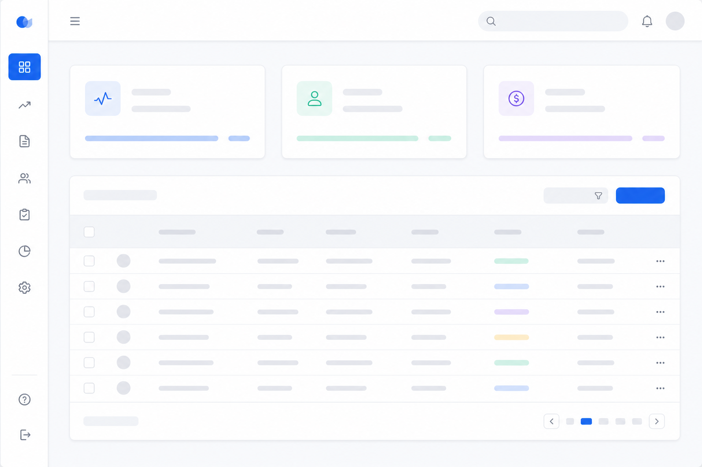
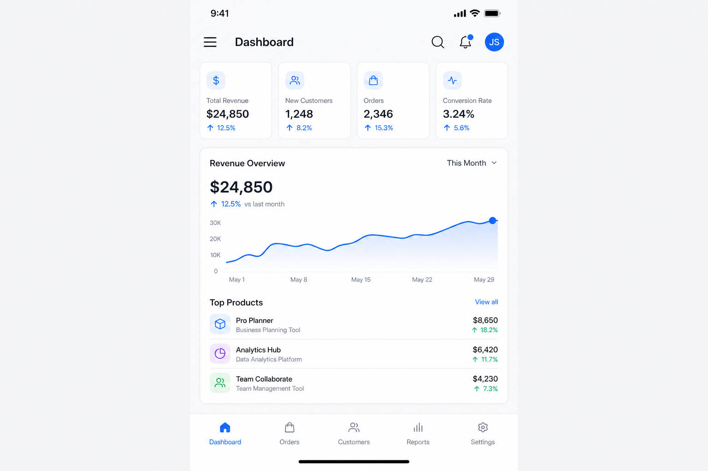

A — Minimal & Swiss
Primary #2563EBBG #F8FAFCText #1E293BCTA #F97316
Desktop
┌────┬──────────────────────────────────────────┐ │ O │ Dashboard [search] [@] │ │ ■ ├──────────────────────────────────────────┤ │ □ │ ┌────────┐ ┌────────┐ ┌────────┐ │ │ □ │ │ MAIN CONTENT AREA (wide) │ │ │ □ │ │ tables · modules · forms │ │ └────┴──────────────────────────────────────────┘
Mobile
┌─────────────────────┐ │ ≡ Dashboard 🔍 👤│ ├─────────────────────┤ │ ┌────┐ ┌────┐ │ │ │ 24 │ │1.2k│ KPI │ │ └────┘ └────┘ │ │ ┌─────────────────┐ │ │ │ MAIN full width │ │ │ │ (scroll) │ │ │ └─────────────────┘ │ └─────────────────────┘
Đặc trưng: Không gian trung tâm lớn, card có border rõ, màu ít, dễ dùng với Ant Design.
Desktop preview

Mobile preview
